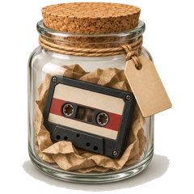

레트로 녹음기
레트로 녹음기
Retro Recorder
Retro Recorder
A retro cassette recorder. Your recordings stay on your phone until you send them.
Grabadora Retro
Grabadora Retro
Una grabadora de casete retro. Tus grabaciones se quedan en tu teléfono hasta que las envías.
レトロレコーダー
レトロレコーダー
レトロなカセットレコーダー。録音は自分で送るまでスマートフォンの中にあります。